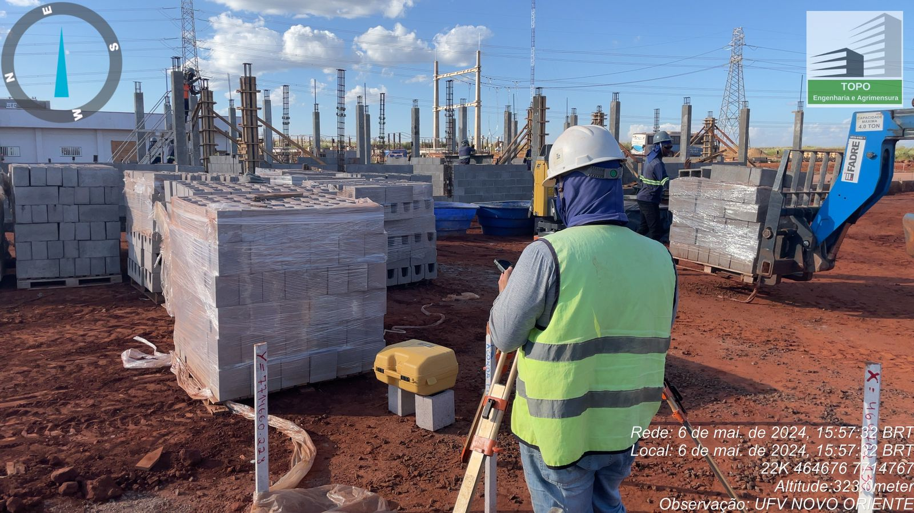

Fundada em 2019 • Engenharia, Topografia e Regularização
Serviços prestados pela Topo Engenharia
Atuamos com soluções técnicas completas para empreendimentos públicos e privados, com foco em segurança jurídica, precisão técnica e cumprimento rigoroso de prazos.
Serviços precisos e confiáveis
Cumprimento de prazos e orçamentos
Segurança e sustentabilidade
Comunicação transparente
SERVIÇOS PRESTADOS


O que a Topo entrega na prática

NOSSO DIFERENCIAL
Por que escolher a Topo Engenharia?
Atuação integrada entre topografia, engenharia e regularização imobiliária
Experiência prática em processos administrativos e legais
Redução de riscos técnicos e jurídicos para o cliente
Soluções personalizadas para cada tipo de empreendimento
Atuação alinhada às exigências de financiamentos e aprovações públicas
Não perca tempo: faça seu orçamento
Entre em contato agora e receba orientação técnica para seu projeto, obra ou regularização. Atendimento direto e organizado.